Journal
Stories, adviceand answers
24 articles from the original Performadog site: handler and breeder interviews, Ask Bill, dog health and Kris’s story. Looking for an ingredient? See the ingredient guide.
Handlers & breeders · 2020
Performadog Interviews Charlotte Priest, Life, Dogs and Training.
Interview with Charlotte Priest on her background, getting into dog sport, a short-lived breeding program and training her Von Forell GSD Django (Jang) to IGP 2.
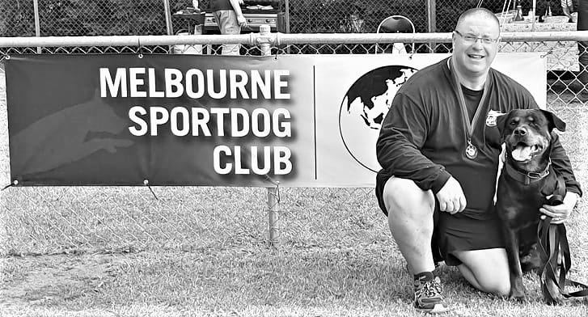
Handlers & breeders · 2020
Performadog Interviews Laurie Boutzetis From Seeuferhaus Kennels About Rottweilers, Breeding, Training & Life.
Long interview with Laurie Boutzetis of Seeuferhaus Kennels about Rottweilers, his mentors, breeding philosophy and tracking titles with his female Chilli (Bluelady vom Checkpoint Charlie).
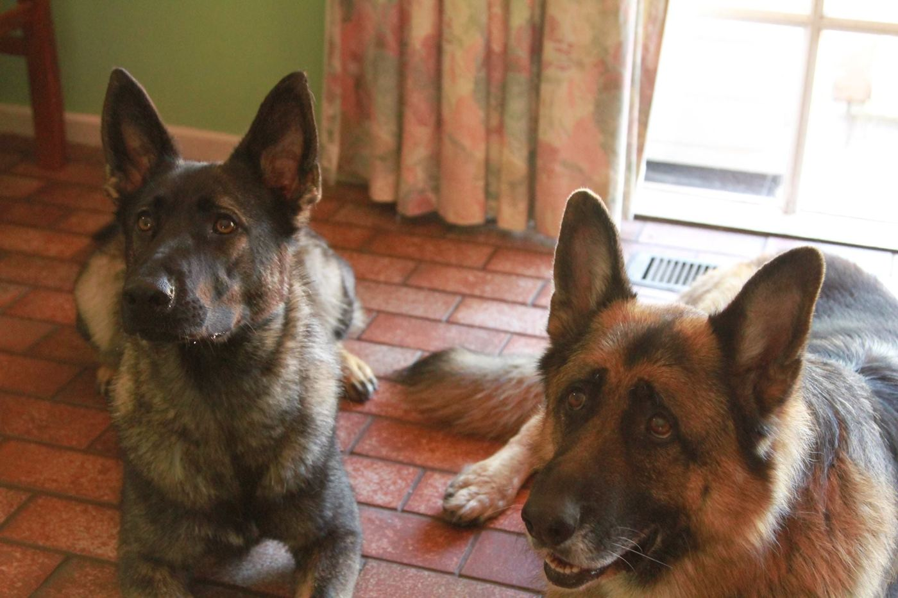
Handlers & breeders · 2020
Performadog Interviews Sue Kawecki, Life, Dogs and Training.
Interview with retired medical scientist Sue Kawecki on her life, her German Shepherds over the years and training her current Von Forell GSD, Monti.
Handlers & breeders · 2020
Performadog Talks To Adrian Young. Life, Dogs and Melbourne Sport Dog Club.
Interview with Adrian Young about moving from Rottweilers to German Shepherds, the Melbourne Sport Dog Club, and his Von Forell GSD Floyd, raised on Performadog.
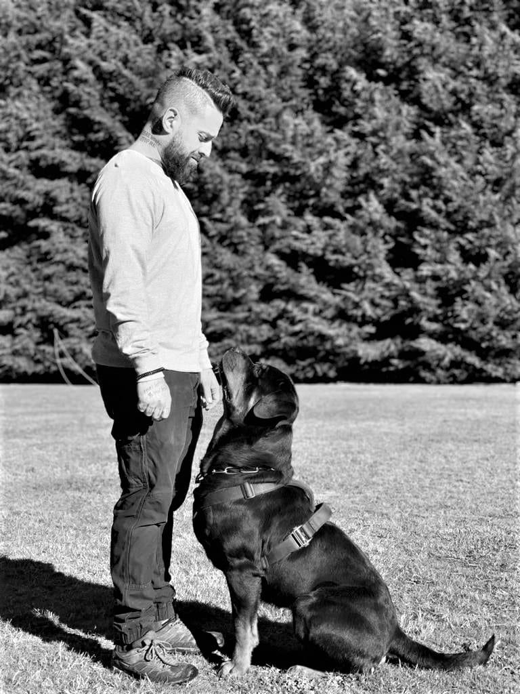
Handlers & breeders · 2020
Performadog Talks With (JP) John Paul Paz. Life, Training and Rottweilers.
Interview with army veteran and trainer JP (John Paul) about becoming a trainer through a veterans' service-dog program, his Rottweiler Devil and his business 4D K9.
Handlers & breeders · 2020
Performadog Talks With Annita Reynolds. Life, German Shepherds, Melbourne Sport Dog Club.
Interview with 70-year-old former language teacher and dairy worker Annita Reynolds about German Shepherds, training and her Von Forell GSD Moser.
Handlers & breeders · 2019
Performadog Talks With Dr Michael Kern. Life, Dobermann and Training
Interview with Perth neurosurgeon Dr Michael Kern about choosing a Dobermann, learning to train his dog Caesar with Von Forell's help, and starting Caesar on Performadog and Purple Boost.
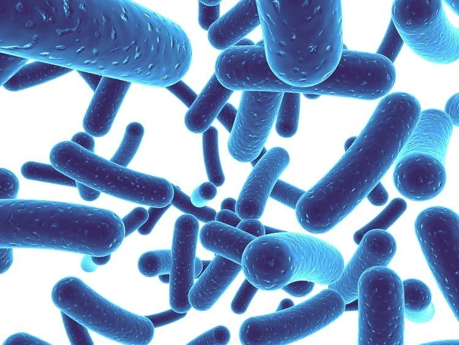
Ask Bill · 2020
Performadog & iPurr Deep Dive With Bill Wiadrowski On The Microbiome
Q&A with nutritionist Bill Wiadrowski on what the gut microbiome is, how pups inherit it from their mothers, and why it matters for health.
Ask Bill · 2020
Phytoestrogen, The Good, Bad and Its Involvements In Dog Food.
Bill Wiadrowski answers a breeder's question about phytoestrogens in dog food (flax, soy, legumes) and whether they affect fertility.
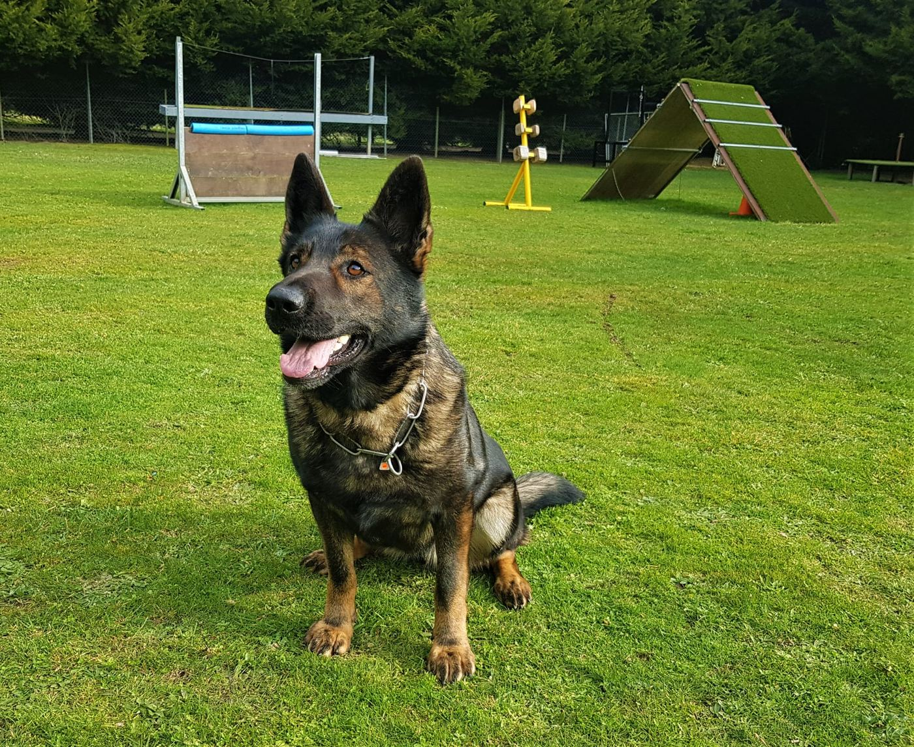
Dog health · 2020
A Solution To Optimum Growth and Microbiome Health In Dogs
A letter to breeders on feeding puppies for growth: why pups need different nutrition from adults, how gut microbiome development early in life matters, and how to ration food through training.
Dog health · 2019
Carbon 60 Fullerene
Explains what C60 (Carbon 60 fullerene) is and promotes it as an antioxidant with anti-ageing and other health benefits.
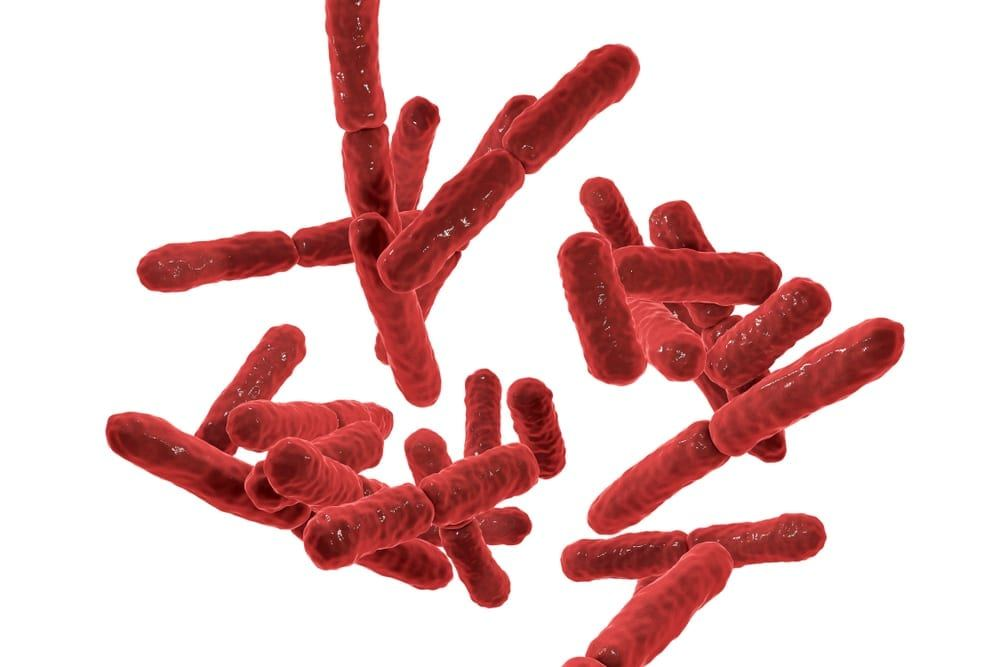
Dog health · 2019
Performadog and iPurr Microbiome
Overview of the microbiome, how modern diets reduce gut diversity, and links to immune and autoimmune problems.
Dog health · 2019
The Effect Of Digestion And The Microbiome On Skin And Coat
Long explainer on how digestion and the gut microbiome affect skin and coat condition, immunity and inflammation.
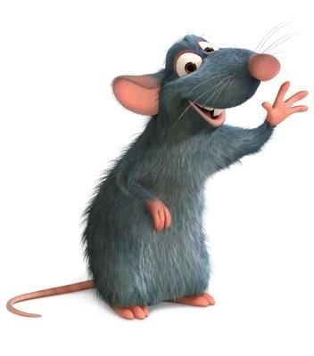
Dog health · 2019
The Famous C-60 Rat Experiment
Describes the 2012 rat study where Carbon 60 in olive oil was reported to extend lifespan by 90%, and asks whether the same could work for pets.
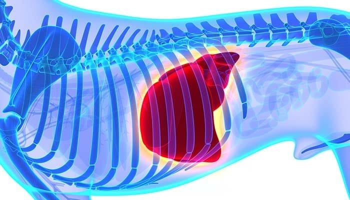
Dog health · 2019
Understanding Digestive Upsets
How good nutrition and a healthy microbiome help manage digestive upsets in dogs and cats.
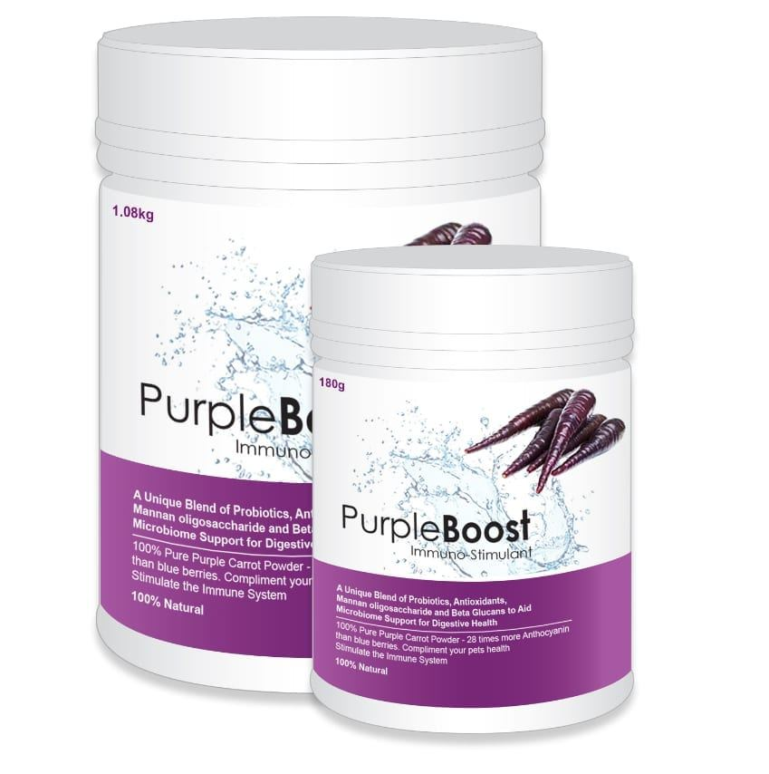
Kris & the brand · 2020
Incredible Testimonial About Performadog Ultra Premium Food
Long customer testimonial from GSD breeders Shannon and Brad (Brashawin German Shepherds) about switching away from Performadog, their dogs' health problems, a sick puppy, and switching back.
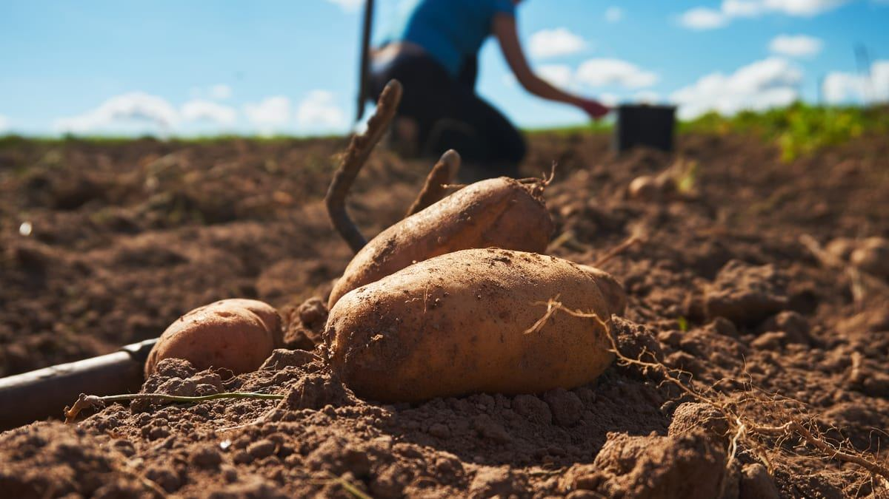
Kris & the brand · 2019
Performadog & iPurr Ethical Recipes
Short 'Ethical Recipes' blurb on combining sympathetic ingredients in the right proportions. Placeholder slug, but it has real copy.
Kris & the brand · 2019
Performadog & iPurr Healthier Outcomes
Short 'Healthier Outcomes' blurb: balanced nutrients mean pets eat less over time as blood nutrient levels stabilise. Placeholder slug, but it has real copy.
Kris & the brand · 2019
Performadog & iPurr Superior Bioavailiblity
Short piece on 'superior bioavailability': more of the food gets used, so less waste and smaller stools.
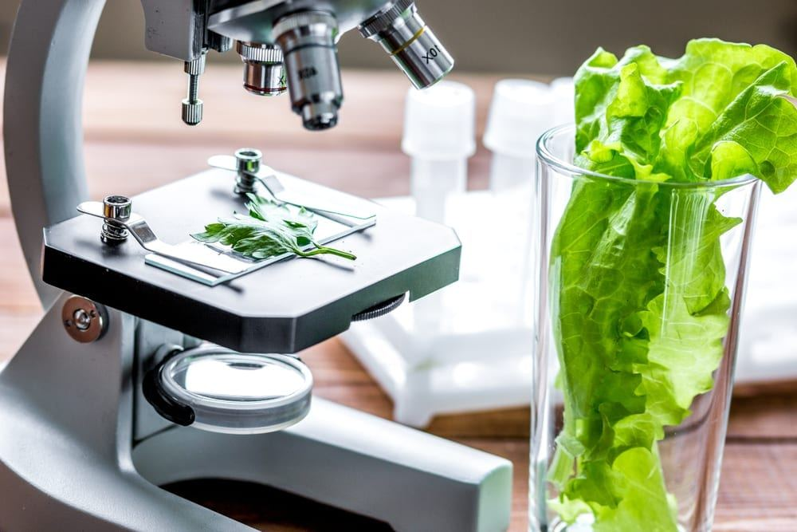
Kris & the brand · 2019
Performadog and iPurr Scientifically Designed
Short piece on Performadog being 'scientifically designed' around balanced nutrient ratios (nutrient ramping).
Kris & the brand · 2019
Reduced Stress by Performadog and iPurr Pet Nutrition
Short piece claiming Performadog and iPurr reduce stress in animals, making them calmer and healthier.
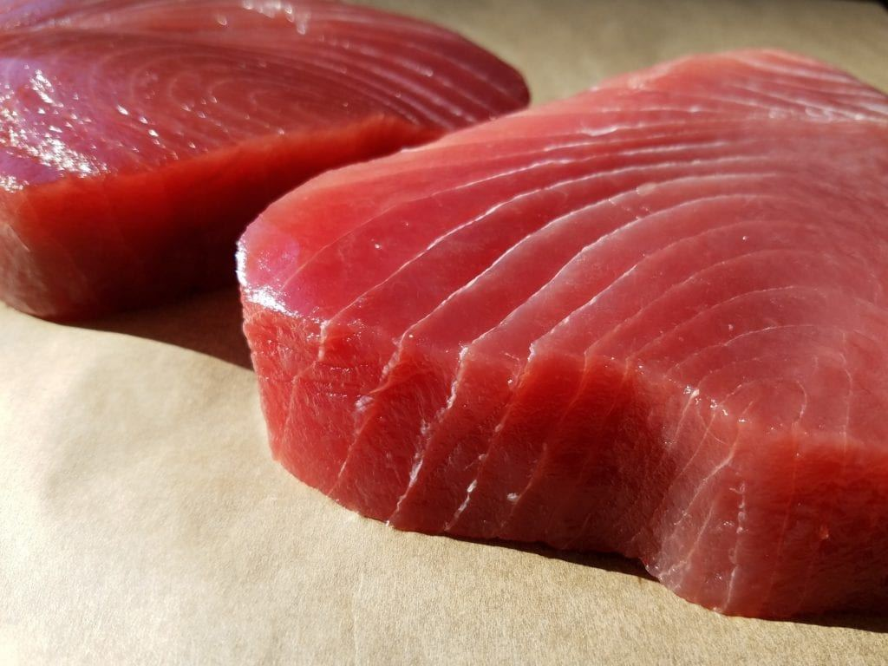
Kris & the brand · 2019
Sympathetic Ingredients
Brand philosophy that food must be made from ingredients 'sympathetic' to the animal to support the microbiome.
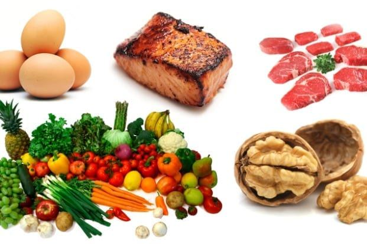
Kris & the brand · 2019
What Is Performadog and iPurr Balanced Nutrition?
What 'balanced' means in Performadog's approach: nutrients in proportion to how the body uses them and to energy density.
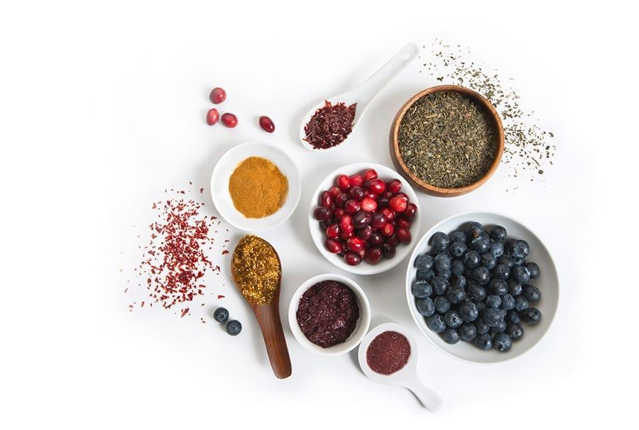
Kris & the brand · 2019
What Is Performadog and iPurr Holistic Food?
Defines 'holistic' (from J.C. Smuts' holism) and what it means for Performadog and iPurr food.
Ask Bill
39 questions, answered on camera
Bill Wiadrowski, animal nutritionist since 1986, on sourcing, manufacturing, raw vs dry, the microbiome and more.
From $48 · 2.5 kg trial bag
Feed your dog like a working dog.
Free metro delivery over $150 · subscribe, skip or cancel anytime · palatability guarantee